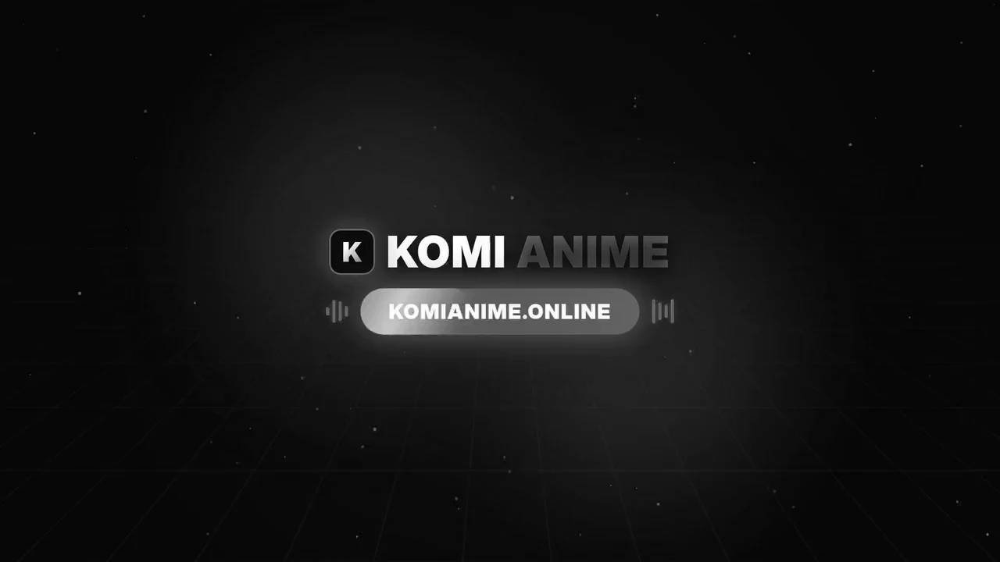

Выбери свою
историю.
Найди аниме на вечер — и продолжи с того места, где остановился.
Шестисекундная заставка KomiAnime из собственного рекламного ролика. На телефонах остаётся первый кадр. На компьютере видео можно поставить на паузу; настройка уменьшения движения тоже учитывается.
Вернуться на главную